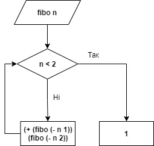
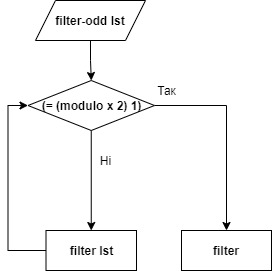

Лабораторна робота №1
Тема: Використання рекурсії для організації повторювальних процесів
Завдання:
11.1.Послідовність 1, 1, 2, 3, 5, 8, ... складається з чисел Фібоначчі. Кожен елемент, починаючи з третього, дорівнює сумі двох попередніх. Рекурентне співвідношення для розрахунку чисел Фібоначчі таке:
Ввести з клавіатури два натуральних числа m та n, які означають кількість чисел та номер числа в послідовності Фібоначчі. Вивести послідовність чисел Фібоначчі в кількості m елементів та значення n-го числа. Передбачити випадок m < n. Визначити глибину рекурсії.
11.2 Створити рекурсивну функцію, яка отримує числа, зчитуючи їх з клавіатури, і перевіряє їх на непарність. Кінець вводу - число 0. Функція не повертає значення, а відразу ж виводить результат на екран, зберігаючи порядок ведених чисел. У цьому завданні не можна використовувати глобальні змінні і передавати будь-які аргументи в рекурсивну функцію. Основна програма повинна складатися тільки з виклику цієї функції. Контрольний тест: введені числа 3 2 1 0, отриманий результат: 3 1.
Опис алгоритму роботи програми 11.1:
- Отримуємо число n
- Формуємо послідовність чисел Фібоначчі
за допомогою функції build-list - Перевіряємо, чи n<2
- Якщо n<2, виводимо 1
- Якщо n>2, обчислюємо послідовність Фібоначчі за рекурентним співвідношенням
- Викликаємо функцію
- Виводимо результат
Опис алгоритму роботи програми 11.2:
- Отримуємо список чисел
- Перевіряємо чи число в списку є парним
- Якщо число парне, не додаємо в список
- Якщо число непарне, додаємо таке число в список
- Викликаємо функцію
- Виводимо результат
Блок-схема алгоритму рекурсивної процедури 11.1:
Блок-схема алгоритму рекурсивної процедури11.2:
Обгрунтування вибору середовища та мови
В якості середовища було обрано DrRacket версії 8.2 та мова Racket
Вибір середовища та мови був зумовлений наступним:
Код програми:
(define (fibo n)
(first
(foldr (lambda (no-use ls) (list (second ls) (+ (first ls) (second ls))))
'(0 1)
(build-list n (lambda (x) x)))); вивід послідовності Фібоначчі з використанням lambda функції
(if (<= n 2)
1
(+ (fibo (- n 1)) (fibo (- n 2)))))
; Task 11.2
(define (filter-odd lst)
(filter (lambda (x)(= (modulo x 2) 1)) lst))
(display "#Task 11.1#\n")
(display "The Fibonacci sequence:")
(build-list 15 fibo)
(display "The sum of Fibonacci sequence=")
(fibo 15)
(display "#Task 11.2#\n")
(display "Task Result=")
(define numbers (list 3 2 1 0))
(filter-odd numbers)
Скріншоти результатів:
Висновки:
В ході виконання даної лабораторної роботи було сформовано декларативне мислення в галузі програмування завдяки використанню чистих функцій, рекурсій замість циклів, запобіганню даних, що змінюються.
Опановано застосування рекурсивних функцій для обчислювальних процесів, на прикладі вирішення наступних завдань: